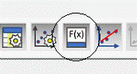
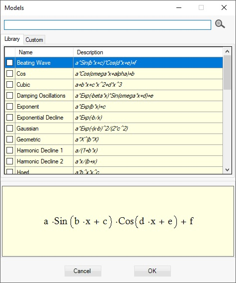
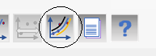
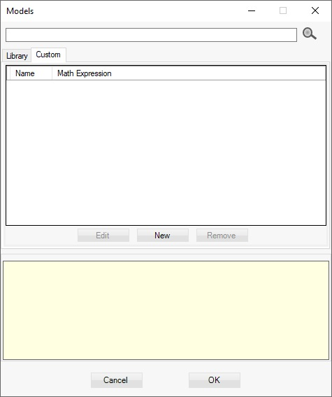
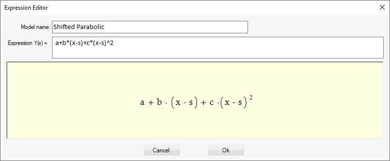
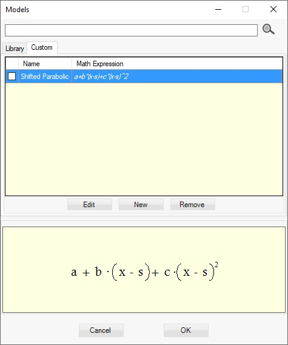

To add model(s) to the project select Analysis > Add Models (also Ctrl +M keys) from the menu or click on the Add Models button

The models dialog opens

You can choose from built in library models or custom models you have created. To find faster a model a search option is provided.
Enter key words to search. You can provide several search key words by separating them with comma.
All library models have built in algorithm to initialize model parameters. When a new model is added to the project those parameters are initialized and standard error is calculated and displayed in the models table.
Select Analysis>Add all library models from the menu or press Ctrl + L if you want to add all library models so that the best fit among them is found. Use also the button Add all models

To update the Std. Error on all models in the project after you have changed data, select Analysis > Update Std. Errors from the menu.
Custom model
To make approximation with custom function which is not in the library open the Models dialog from the menu Analysis > Add Models or press Ctrl+M keys. Switch to ‘Custom’ models tab using the mouse click or press Ctr+U Keys.

Click on ‘New’ button to open the Math Expression Editor. Enter name and math expression a+b*(x-s)+c*(x-s)^2 as show in the picture:

Click Ok button. The new function is added to the set of custom functions.

Use combination of Ctrl+E, Ctrl+N and Ctrl+R keys to edit, create new or remove the selected function. To add the function check the check box on the function line and press Ok button.
You can switch back to library function by pressing Ctrl+L keys.